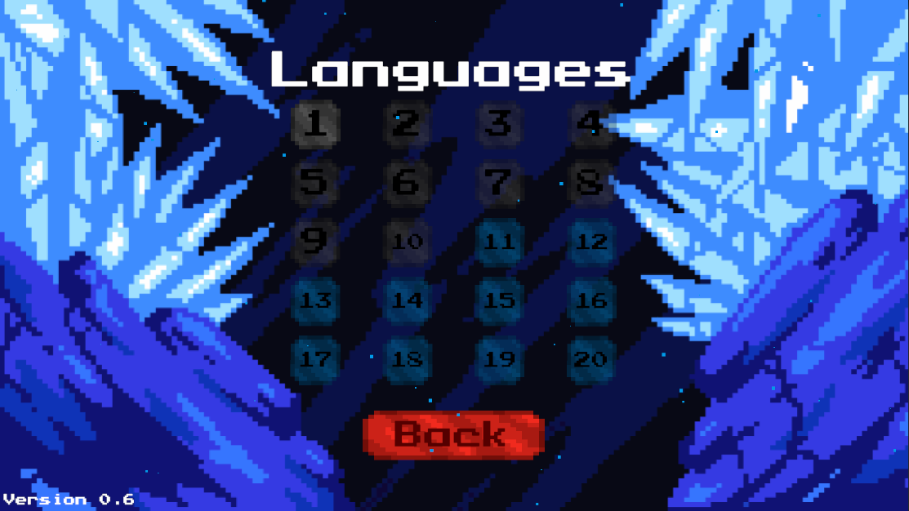
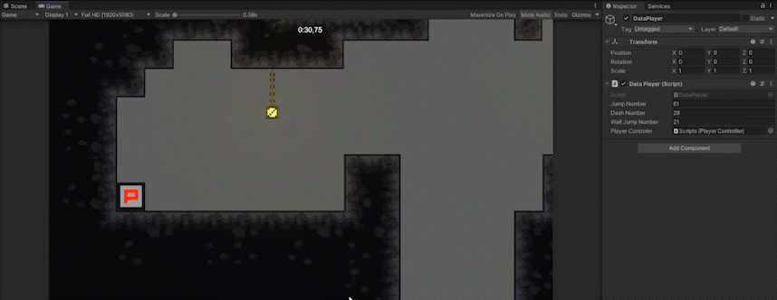

Bonjour à tous, c’est Arthur ! Et Bienvenue dans cette nouvelle newsletter ! Si vous êtes nouveau, n'hésitez pas à lire les précédentes newsletters écrites par notre équipe pour découvrir ce que nous avons déjà produit.
Cette semaine a été chargée en ajout de nouvelles fonctionnalités. Nous avons implémenté la fonctionnalité principale, la selection des niveaux une fois terminés, le chronomètre, la sauvegarde des statistiques et la plateforme tombante(Falling Platform). Vous trouverez ci-dessous des descriptions de ces différentes fonctionnalités ainsi que des visuels.
Comme précisé la semaine dernière, celle-ci reste secrète, pour autant son développement se poursuit malgré le léger retard de la semaine dernière.
Il est désormais possible de sélectionner un niveau une fois que le niveau précédent a été terminé. De plus, lorsque l'on finit un niveau le joueur est automatiquement envoyé dans le niveau suivant.
Cette fonctionnalité permet de compter le temps passé sur le niveau. Ce chronomètre ne compte pas les heures, il compte seulement les minutes, secondes et millisecondes.
Cette sauvegarde permet de comptage du nombre de sauts, 'dashes', et 'wall-slides' effectués par le joueur. Ces données sont stockées dans un fichier nommé PlayerPrefs qui n'est pas crypté, il est donc possible de modifier ces données manuellement. Nous avons fait ce choix du fait qu'il s'agisse d'un jeu solo.
Cette fonctionnalité met en place une plateforme capable de tomber un certain temps après que le joueur soit entré en collision avec celle-ci, et de réapparaître un certain temps après sa chute. Cette plateforme est temporairement violette étant donné que sa texture n'a pas encore été créée.

Cette semaine nous allons principalement nous concentrer sur l'amélioration de ce qui a déjà été fait dans l'optique de préparer la sortie du jeu qui approche à grand pas.
Léo constitue le groupe qui s'occupera des musiques, plus particulièrement une pour la maison du début qui sera douce et une autre pour le centre de la terre qui aura comme instrument principal un Ukulele.
Ce groupe sera constitué de Nathan et Arthur (moi-même), et elle s'occupera de la re-factorisation du code, dans le but de rendre le code du jeu plus propre et plus simple à utiliser.
Balthazar et Nathan constituent le groupe qui va s'occuper de la création des graphismes des prochains niveaux.
Ce dernier groupe qui sera constitué de Abdourahmane, Balthazar, Nathan et Arthur s'occupera de la création des niveaux du jeu.
N'hésitez pas à suivre et partager notre projet. Vous pouvez venir nous soutenir et poser vos questions sur notre serveur Discord.
Merci d'avoir lu cette douzième newsletter et à la semaine prochaine !
Team Spelunca.
Rédaction : Arthur PELLEGRINI